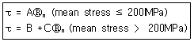
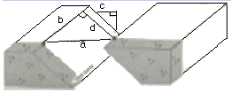
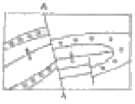
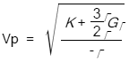
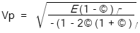
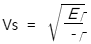
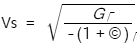
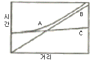
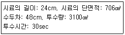

응용지질기사 (2010-05-09 기출문제)
1과목: 암석학 및 광물학
1. 직경 64mm 이상의 둥근 쇄설물로 주로 이루어진 세립질의 화성쇄설암은?
- 응회암
- 집괴암
- 고회암
- 화산력 응회암
(정답률: 82%)

2. 화산분출 시 마그마의 80% 정도를 차지하며 SiO2함량이 일반적으로 50% 내외인 마그마는?
- 유문암질 마그마
- 안산암질 마그마
- 현무암질 마그마
- 화강암질 마그마
(정답률: 89%)
3. 다음 광물 중에서 저온ㆍ고압의 변성작용 지시자로서 사용되는 광물은?
- 십자석(staurolite)
- 남섬석(glaucophane)
- 불석족(zeolite group)
- 근청석(cordierite)
(정답률: 61%)
4. 퇴적암 내 입자크기의 균질성 정도를 지시하는 용어는?
- 분급도
- 원마도
- 성숙도
- 구형도
(정답률: 76%)
5. 다음 중 우이드가 생성되는 환경으로 가장 적절한 곳은?
- 조간대
- 심해
- 화구
- 강바닥
(정답률: 75%)
6. 오피올라이트(ophiolite)와 가장 관련이 깊은 것은?
- 칼크알칼리 안산암
- 쳐트나 원양성 퇴적암
- 화성탄산염암
- 구과상 화강암
(정답률: 96%)
7. 점이층리(graded bedding)에 대한 설명으로 옳은 것은?
- 다른 특성을 가진 층들이 교호되어 쌓인 층리
- 지층의 하부에서 상부로 갈수록 지층을 구성하는 입자의 입도가 점차로 세립화하는 층리
- 실트보다 큰 입자들이 강의 난류나 바람 등에 의해 경사되어 쌓인 층리
- 서로 다른 크기의 입자들이 질서없이 불규칙하게 쌓여 있는 층리
(정답률: 96%)
8. 주로 조회장석(labradorite)과 휘석(pyroxene)으로 구성된 관입화성암으로서 오피틱(ophitic)조직을 갖는 특징이 있는 암석은?
- 반려암
- 휘록암
- 섬록반암
- 섬장반암
(정답률: 64%)
9. 석회암이 변성작용을 받아 생성되는 암석은?
- 편마암
- 대리암
- 백립암
- 녹색편암
(정답률: 91%)
10. 다음 중 파쇄변성작용(cataclastic metamorphism)으로 형성된 암석은?
- 천매암(phyllite)
- 사문암(serpentinite)
- 혼펠스(hornfels)
- 슈도타킬라이트(pseudotachylite)
(정답률: 79%)
11. 다음 중 광물의 색과 조흔색의 연결로 옳지 않은 것은? (단, 광물명-색-조흔색의 순서이다.)
- 황동석 - 진한 황색 - 녹흑색
- 자철석 - 흑색 - 흑색
- 자연금 - 황색 - 연황색
- 황철석 - 연황색 - 황색
(정답률: 66%)
12. 정장석에서 관찰할 수 있는 칼스바드 쌍정(Carlsbad twin) 은 c축을 쌍정축으로 몇 도 회전하여 이루어지는가?
- 30°
- 60°
- 120°
- 180°
(정답률: 84%)
13. 다음 중 불소(F) 성분을 함유하는 광물이 아닌 것은?
- 녹주석
- 인회석
- 형석
- 황옥
(정답률: 47%)
14. 다음 중 비중이 제일 큰 광물은?
- 황동석
- 자철석
- 방연석
- 섬아연석
(정답률: 75%)
15. 빛이 고밀도 물질에서 저밀도 물질로 입사할 때, 임계각 이상의 입사각을 가지고 입사한 광선이 나타내는 현상은?
- 난반사 현상
- 복굴절 현상
- 전반사 현상
- 단굴절 현상
(정답률: 65%)
16. 다음 중 결정축의 길이는 모두 다르나 결정축이 이루는 3개의 축각이 모두 같은 광물은 무엇인가?
- 다이아몬드
- 금홍석
- 황옥
- 남정석
(정답률: 49%)
17. 결정이 이루는 3요소인 결정면(f), 우각(c) 및 능(e)사이에 성립하는 관계식으로 맞는 것은?
- f - c = e + 2
- f - c = e + 1
- f + c = e + 2
- f + c = e + 1
(정답률: 100%)
18. 어떤 화학적 원소의 특징을 유지하는 가장 작은 독립적 입자를 무엇이라 부르는가?
- 분자
- 원자
- 전자
- 양성자
(정답률: 89%)
19. 다음 중 연마한 광물의 표면에 미세한 전자선을 조사시켜 발생되는 2차 X-선스펙트럼의 파장과 강도를 분해함으로써 광물에 들어 있는 원소들을 측정하는 분석법은 무엇인가?
- 중성자회절분석
- X-선형광분광분석
- 원자흡수분광분석
- 전자현미분석
(정답률: 77%)
20. 금속원소의 반응 능력(이온화 경향)에 대한 설명으로 옳지 않은 것은?
- 금속원소 중 K가 가장 반응 능력이 높고, Au는 가장 낮다.
- 반응 능력이 높은 금속은 강한 산화제여서, 산소와 쉽게 결합한다.
- 반응 능력이 높은 금속은 대체로 쉽게 부식되고, 퇴색된다.
- 귀금속이 안정성이 높은 것은 반응 능력이 낮기 때문이다.
(정답률: 77%)
2과목: 구조지질학
21. 다음 중 안산암질 마그마가 주로 형성되는 곳은?
- 맨틀로 섭입되어가는 해양지각
- 대륙지각 중앙부
- 중앙해령
- 변환단층 경계부
(정답률: 85%)
22. 다음은 Byerlee에 의하여 구하여진 일반적인 암석의 마찰관계식(friction equation)이다. 상수 A, B, C 값을 순서대로 나열한 것은? (단, τ: 전단응력, Ⓡn : 수직응력)

- A=0.6, B=50, C=0.85
- A=0.5, B=60, C=0.7
- A=0.85, B=50, C=0.6
- A=0.7, B=60, C=0.5
(정답률: 59%)
23. 다음 중 가장 높은 온도와 깊은 심도에서 형성된 단층암은 무엇인가?
- 단층 각력(fault breccia)
- 슈도타킬라이트(pseudotachylite)
- 초파쇄암(ultracataclasite)
- 압쇄암(mylonite)
(정답률: 73%)
24. 최대 주응력이 100MPa,, 최소 주응력이 20MPa일 때 최소 주응력축과 이루는 각(θ)이 40°인 면에 작용하는 수직응력(Ⓡn)과 전단응력(τ)을 순서대로 바르게 나타낸 것은?
- 67MPa, 39MPa
- 72MPa, 25MPa
- 75MPa, 21MPa
- 78MPa, 17MPa
(정답률: 64%)
25. 다음 그림을 설명한 것으로 옳지 않은 것은?

- a - net slip
- b - strike slip
- c - heave
- d - throw
(정답률: 89%)
26. 단층과 절리에 대한 설명으로 옳지 않은 것은?
- 절리란 수축 또는 팽창에 의해 암석 중에 생긴 틈을 말한다.
- 절리는 연성변성작용에 의해, 단층은 취성변성작용에 의해 형성된다.
- 단층과 절리 모두 응력조건과 암석의 물성에 따라 결정되는 불연속면이다.
- 단층은 암석 내에 발달해 있는 틈이나 단열로서, 이 틈의 양 벽의 변위가 최소 5mm이상이어야 한다.
(정답률: 85%)
27. 절리의 방향성 등의 해석에 사용하는 다이어그램(diagram)이 아닌 것은?
- 극점(Pole) 다이어그램
- 장미(Rose) 다이어그램
- 베타(Beta) 다이어그램
- 극점-밀도(Pole-density) 다이어그램
(정답률: 64%)
28. 다음 지사학의 법칙 중 멀리 떨어져 있는 지층들 사이의 대비(correlation)에 이용되는 것은?
- 관입의 법칙
- 동일과정의 법칙
- 부정합의 법칙
- 동물군 천이의 법칙
(정답률: 67%)
29. 지구 내부의 물리학적 층상구조(또는 유변학적 층상구조)에 해당되지 않는 것은?
- 암석권
- 연약권
- 하부맨틀
- 외핵
(정답률: 74%)
30. 미국의 앨버타주에서 애리조나주에 걸쳐 넓게 발달하는 우식 및 토양침식에 의한 지형으로 우곡이 무수히 패여서 형성된 거친 지형의 명칭은?
- 메사(mesa)
- 에스카프먼트(escarpment)
- 악지(badland)
- 뷰트(butte)
(정답률: 85%)
31. 다음 지질도에서 A-B선에 따라 단면도(斷面圖)를 작성하려 한다. X지점의 위경사(僞傾斜, apparentdip)는?
- 수직
- 70°N
- 60°NE
- 수평
(정답률: 73%)
32. P파의 음영대(shadow zone)가 생기는 이유는?
- P파가 액체상태의 외핵을 통과하지 못하기 때문
- Moho면에서의 굴절과 반사로 인하여
- 맨틀/핵 경계부에서의 굴절과 반사로 인하여
- 외핵/내핵 경계부에서의 굴절과 반사로 인하여
(정답률: 77%)
33. 중력이 최대주응력(Ⓡ1)으로 작용하여 형성된 단층은?
- 역단층
- 스러스트 단층
- 주향이동단층
- 정단층
(정답률: 88%)
34. 다음 중 해안에 가장 인접한 퇴적 지형은 무엇인가?
- 삼각주
- 선상지
- 충적추
- 범람원
(정답률: 78%)
35. 판구조론에서 말하는 판쪽(plates)들의 경계선에 해당되지 않는 구조대는 다음 중 어느 것인가?
- 해저산맥
- 변환단층
- 해구
- 빙하퇴적층대
(정답률: 96%)
36. 다음은 어떤 면의 주향/경사(strike/dip)를 나타낸 것이다. 주향/경사의 관계가 잘못된 것은?
- N40° W/30° SW
- NS/40° E
- N40° E/50° SW
- N60° W/70° NE
(정답률: 70%)
37. 미국 서부의 'Basin and Range'를 형성시킨 가장 직접적인 메커니즘은?
- 뱃사습곡작용
- 정단층운동
- 스러스트운동
- 좌수향 주향이동성 단층운동
(정답률: 65%)
38. 다음 층군 중 그 퇴적분지의 형성이 중생대 조산운동과 관련이 깊은 것은?
- 조선누층군
- 평안누층군
- 대동층군
- 연천층군
(정답률: 57%)
39. 다음 그림에서 단층 A-A'는 기하학적 분류에 의하면 어떤 단층에 해당되는가?

- 종단층
- 횡단단층
- 정단층
- 주향단층
(정답률: 69%)
40. 태평양 주변에는 환태평양 지진대라고 하여 태평양 주변을 따라 지진이 많이 발생한다. 이렇게 많은 지진이 발생하는 가장 큰 이유는?
- 바다와 육지의 경계이기 때문에
- 화산활동의 경계이기 때문에
- 판의 경계부가 많기 때문에
- 태평양판이 워낙 큰 판이기 때문에
(정답률: 91%)
3과목: 탐사공학
41. 다음 전자탐사법 중 마치 탄성파 탐사와 유사한 방법으로 탐사자료를 획득하고 처리하는 방법은 무엇인가?
- MT 탐사법
- TEM 탐사법
- VLF 탐사법
- GPR 탐사법
(정답률: 90%)
42. 다음 중 지구 자기장 벡터를 표현하는데 필요한 요소가 아닌 것은?
- 예각(acute angle)
- 편각(declination)
- 복각(inclination)
- 강도(intensity)
(정답률: 52%)
43. 부게(Bouguer) 보정에 대한 설명으로 옳지 않은 것은?
- 측정지점이 기준면보다 고도가 낮으면 보정값을 측정 중력치에서 빼준다.
- 측정지점과 기준면 사이에 존재하는 물질의 인력에 의하여 나타나는 중력의 차이를 보정하여 주는 것이다.
- 보정값은 0.04193 ρㆍh로 계산한다. 여기서 ρ는 암석의 밀도이고, h는 고도차이다.
- 부게 보정은 프리에어 보정과 부호가 반대이며, 이 둘을 합하여 고도 보정이라 한다.
(정답률: 80%)
44. 전자파의 속도가 다른 두 층에서 제1층의 유전상수가 1이고 제2층의 유전상수가 4일 때 반사계수는? (단, 전자파는 수평 반사면에 수직 입사하였음)
- 2
- 1.67
- 0.60
- 0.33
(정답률: 72%)
45. 길이가 같은 두개의 단진자(Pendulum)가 각각 A, B두 지점에 있다. 두 단진자의 주기를 측정한 결과 A, B 지점에서 각각 T, 2T였다고 하면, A, B점의 중력값의 관계는?
- A 지점이 B 지점의 2배
- A 지점이 B지점의 1/2
- A 지점이 B 지점의 4배
- A 지점이 B 지점의 1/4
(정답률: 81%)
46. 다음 중 지열탐사법에 대한 설명으로 옳지 않은 것은?
- MT 법은 용암 또는 거의 용암 상태의 암석의 전기 비저항이 비정상적으로 매우 높다는 점을 탐사의 지짐으로 사용한다.
- Curie 점법은 암석이 수백도의 온도에 이르면 자성을 잃게 되는 성질을 이용하여 고온암체의 부존을 확인하는 방법이다.
- P파 자연법이란 매우 뜨거운 암체가 부존하는 경우 P파는 속도가 감소하여 그 도착시간이 지연되고, S파는 진폭이 감소되는 현상을 탐지하는 방법이다.
- 지열탐사는 지각내의 용암의 부존에 기인하는 물리적 성질들의 변화에 의하여 지열광상의 부존을 확인하는 방법이다.
(정답률: 56%)
47. 지구화학탐사에서 토양을 기후에 따라 분류할 수 있는데 성숙토양 단면이 잘 발달되며 토양의 성질은 주로 기후와 식생에 의해 결정되는 토양은?
- 성대성 토양(zonal soil)
- 간대성 토양(intrazonal soil)
- 비성대성 토양(azonal soil)
- 잔류 토양(residual soil)
(정답률: 81%)
48. 주파수 영역 전자탐사에서 신호원의 주파수와 전자파의 침투심도와의 관계에 대한 설명으로 맞는 것은?
- 주파수가 높을수록 침투심도가 깊어진다.
- 주파수가 낮을수록 침투심도가 깊어진다.
- 침투심도는 송신전류의 크기 및 지하 매질의 전기전도도에 관련되므로 주파수와는 관계없다.
- 침투심도는 송신루프의 크기에만 좌우되므로 주파수와는 무관하다.
(정답률: 77%)
49. 다음 관계식 중 맞는 것은? (단, Vp: P파의 전파속도, Vs: S파의 전파속도, E: 영율, K: 체적탄성율, G: 강성율, ρ: 밀도, υ: 포아송비)




(정답률: 69%)
50. 밀도 검층은 γ선의 작용을 이용하여 암석의 체적밀도를 측정한다. 이 때 이용되는 γ선의 작용은 무엇인가?
- 쌍 생산
- 쌍 소멸
- 콤프턴(compton) 산란
- 광전 효과
(정답률: 92%)
51. 탄성파에 대한 설명으로 옳지 않은 것은?
- 탄성파는 실체파(body wave)와 표면파(surface wave)로 구분할 수 있다.
- P파는 파의 진행방향이 입자의 운동방향과 수직이다.
- 레일리파(Rayleigh wave)는 표면파로서, 입자의 운동은 파의 진행방향에 반대방향으로 일어나는 역행운동을 한다.
- S파는 실체파로서 횡파 또는 전단파로 부르며, 그 운동 성분에 따라서 SV파와 SH파로 나눌 수 있다.
(정답률: 92%)
52. 다음 중 전기비저항에 관한 설명으로 옳지 않은 것은?
- 전기비저항은 같은 암종이라도 수분의 함량에 따라 달라지며, 수분 함량이 높을수록 높은 전기비저항 값을 보인다.
- 일반적으로 퇴적암의 전기비저항은 화성암이나 변성암에 비교하여 더 낮다.
- 여러 가지 암석 및 광물의 물리적인 성질 중에서 전기비저항은 그 변화의 폭이 가장 크다.
- 전기비저항의 단위는 Ωm를 쓰며, 전기전도도의 역수이다.
(정답률: 52%)
53. 직접파, 반사파, 굴절파가 지오폰에 도달하는 것을 나타낸 주시곡선에서 A, B, C는 순서대로 각각 무엇인가? (단, 단일 경계면 위에서 탄성파 탐사를 수행하고, 지오폰에 일직선상에 파원으로부터 일정한 간격을 두고 전개하였다고 가정한다.)

- 직접파 - 반사파 - 굴절파
- 굴절파 - 직접파 - 반사파
- 반사파 - 직접파 - 굴절파
- 반사파 - 굴절파 - 직접파
(정답률: 72%)
54. 직류 또는 저주파 교류를 시추공 내에 위치하는 이동전극 과 지표상에 고정되어 있는 전극 사이에 흘려보내고 두 전극 사이에 있는 지층의 전기저항을 측정하는 검층법은?
- 단극 전기저항 검층
- 노말 전기비저항 검층
- 레터럴 전기비저항 검층
- 전자유도 검층
(정답률: 70%)
55. 다음 중 평균 대자율이 가장 큰 광물은?
- 황철석
- 황동석
- 흑연
- 적철석
(정답률: 36%)
56. 다음 중 중력이상이 나타나지 않아 중력탐사를 적용하기 어려운 곳은?
- 향사습곡이 있는 지역
- 수평으로 쌓인 퇴적층 지역
- 단층이 있는 지역
- 화강암이 관입한 지역
(정답률: 100%)
57. 산화조건(pH 5~8)의 지표환경에서 상대적 이동도가 가장 큰 원소는?
- K
- Fe
- Cl
- Aㅣ
(정답률: 80%)
58. 다음 중 임펄스(impulse)형 탄성파 에너지원이 아닌 것은?
- 바이브로사이스(Vibroseis)
- 웨이트 드롭(Weight-drop)
- 에어건(Air-gun)
- 다이나마이트(Dynamite)
(정답률: 83%)
59. 암석이 잔류자기를 갖게 되는 현상을 자연잔류자화라고 하는데, 자연잔류자화 가운데 자성물질이 높은 온도로부터 큐리 온도를 거쳐 서서히 식어갈 때 외부 자기장에 의하여 강하고도 안정된 잔류자기를 얻게 되는 현상을 무엇이라고 하는가?
- 등온 잔류자화
- 열 잔류자화
- 퇴적 잔류자화
- 화학 잔류자화
(정답률: 84%)
60. 수평 2층 구조에서 굴절법 탄성파탐사를 실시하여 상부층의 탄성파 전파속도는 1000m/s, 하부층의 속도는 2000m/s임을 확인하였다. 이때 주시곡선상의 시간절편(intercept time)이 20ms라면 상부층의 두께는?
- 11.5m
- 14.7m
- 23.1m
- 26.7m
(정답률: 66%)
4과목: 지질공학
61. Terzaghi의 암반하중분류법에 따르면, 터널을 굴착하는 경우 터널의 안전성에 가장 영향을 미치는 암반상태는 어느 것인가?
- 팽창성 암반이 존재하는 경우
- 압착성 암반이 존재하는 경우
- 절 리가 존재하는 경우
- 암반이 블록상으로 파쇄되어 있는 경우
(정답률: 76%)
62. 극한평형조건을 이용하여 안전율을 해석할 수 없는 암반사면의 파괴형태는?
- 평면파괴
- 전도파괴
- 쐐기파괴
- 원호파괴
(정답률: 53%)
63. 다음 중 다짐에 의한 연약지반개량 공법에 해당되지 않는 것은?
- 바이브로플로테이션 공법
- 동압밀 공법
- 샌드 컴팩션 파일 공법
- 프리로딩 공법
(정답률: 45%)
64. 다음 중 화학적 풍화에 가장 강한 광물은?
- 휘석
- 감람석
- 각섬석
- 백운모
(정답률: 79%)
65. 어떤 점성토 지반에 대하여 표준관입시험을 실시하였더니 타격횟수 N=18이었다. 이 지반의 연경도(consistency)는?
- 연약
- 보통
- 견고
- 매우 견고
(정답률: 63%)
66. 다음 수리상수에 대한 설명으로 옳지 않은 것은?
- 투수량계수는 수리경사가 큰 불포화 대수층을 수직 적으로 이동시킬 수 있는 물의 양을 의미한다.
- 저류계수는 단위 수두변화에 따라 단위 표면적당 투수성 층이 흡수하거나 배출하는 물의 체적을 의미한다.
- 비저류계수는 단위 수두변화에 대해 광물입자와 공극수의 압축 또는 팽창으로 인해 저장되거나 배출되는 포화층의 단위체적당 물의 양을 의미한다.
- 피압대수층의 저류계수는 비저류계수와 대수층 두께의 곱으로 표현할 수 있다.
(정답률: 60%)
67. 가는 모래에 대하여 정수두 투수시험을 실시하여 다음과 같은 결과를 얻었다면 투수속도(유속)는 얼마나 되겠는가?

- 0.15cm/sec
- 0.76cm/sec
- 1.2cm/sec
- 1.5cm/sec
(정답률: 50%)
68. 다음 중 지하수의 추적자 시험에서 추적자(tracer)로 사용할 수 없는 성분은?
- 칼슘
- 염소
- 브롬
- 요오드
(정답률: 73%)
69. 시추조사를 통해 획득한 샘플 코어의 전체 길이에 대한 10cm이상의 크기를 가진 코어 길이의 합을 백분율로 나타낸 것은?
- TCR
- RMR
- SMR
- RQD
(정답률: 83%)
70. 우물에서 적정 양수량을 결정하기 위해 실시되는 양수시험의 종류가 아닌 것은?
- 단계 양수시험
- 정수위시험
- 군정시험
- 대수층시험
(정답률: 59%)
71. 다음 중 직접 기초(얕은 기초)에 속하는 것은?
- 푸팅 기초
- 피어 기초
- 말뚝 기초
- 케이슨 기초
(정답률: 41%)
72. Q-System을 이용하여 암반부류를 실시한 결과 Q 값이 3.06으로 결정되었다. 이 값을 이용하여 추정할 수 있는 RMR 값은 얼마인가? (단, Bieniawski (1976) 제안식을 사용할 것)
- 54
- 57
- 60
- 63
(정답률: 59%)
73. 한 변의 길이가 6cm인 정육면체 암석시료의 영률 50GPa, 포아송비 0.25 이다. 이 시료의 모든 면에 300MPa의 일정한 압력이 가하여졌을 때 마주보는 평행한 두면 사이의 줄어든 길이는 얼마인가?
- 0.003cm
- 0.006cm
- 0.018cm
- 0.036cm
(정답률: 50%)
74. 지반침하를 형태에 따라 분류할 때 연속형 침하에 대한 설명으로 옳지 않은 것은?
- 급경사층에서 발생하는 경향이 있다.
- 넓은 지역에 걸쳐 발생한다.
- 심도에 크게 영향을 받지 않는다.
- 오랜 시간에 걸쳐 서서히 발생한다.
(정답률: 60%)
75. 점하중 강도시험과 슈미트 해머 시험을 통해 공통적으로 얻을 수 있는 값은?
- 전단강도
- 인장강도
- 일축압축강도
- 탄성계수
(정답률: 78%)
76. 암반 사면설계를 위한 조사시 필히 수행하여야 할 사항이 아닌 것은?
- 지표지질도와 시추코어 검층에 기초한 정밀 지질조사
- 단열면에 대한 전단강도 측정
- 응력해방법에 의한 초기응력 측정
- 지하수위 변동 조사
(정답률: 42%)
77. 다음 중 건ㆍ습 과정을 받은 암석의 열화에 대한 저항성을 평가하는 시험은?
- 슬레이크 내구성시험
- 흡수팽창시험
- 분쇄능시험
- 크리프시험
(정답률: 67%)
78. 다음 중 현지 암반의 초기응력을 측정할 수 있는 시험방법이 아닌 것은?
- 공경변형법
- 플랫 잭(flat jack) 시험법
- 수압파쇄법
- 공내 재하 시험법
(정답률: 70%)
79. 다음 중 불안정한 사면의 안전율을 증가시킬 목적으로 사용되는 안정공법, 혹은 억지공법에 해당되지 않는 것은?
- 사면의 경사를 완만하게 조정
- 활동가능 토괴의 전부, 혹은 일부를 제거
- 록앵커, 옹벽, 네일링, 억지말뚝 등의 설치
- 생물화학적 방법에 의한 식생보호공
(정답률: 75%)
80. 어떤 흙시료의 공시체에 주응력 Ⓡ1=4.0kg/cm2, Ⓡ3=1.0kg/cm2를 가했을 때 파괴가 일어났다면 파괴면상에서의 전단응력은? (단, 파괴면은 최대주응력 Ⓡ1이 작용하는 면과 60° 각도를 이루고 있다.)
- 1.30kg/cm2
- 1.75kg/cm2
- 3.15kg/cm2
- 3.50kg/cm2
(정답률: 67%)
5과목: 광상학
81. 반암동광상의 모암변질대는 관입암체로부터 외측으로 거의 동심원상에 가까운 대상배열을 보이는데 이를 순서대로 정확히 나열한 것은?
- 프로필라이트 변질대 → 이질 변질대 → 필릭 변질대 → 칼륨 변질대
- 필릭 변질대 → 칼륨 변질대 → 이질 변질대 → 프로필라이트 변질대
- 칼륨 변질대 → 필릭 변질대 → 이질 변질대 → 프로필라이트 변질대
- 이질 변질대 → 칼륨 변질대 → 포로필라이트 변질대 → 필릭 변질대
(정답률: 79%)
82. 마그마의 분화작용이 진행되는 동안, 염기성 마그마에 다량 부존하는 원소들이 아닌 것은?
- 크롬
- 니켈
- 백금
- 주석
(정답률: 53%)
83. 우리나라 광상 중에서 대부분의 동(Cu)광상은 어느 광화대에 주로 분포하고 있는가?
- 함안-군북 광화대
- 태백산지구 광화대
- 설천 광화대
- 황강리 광화대
(정답률: 92%)
84. 우리나라 대표적인 함티탄 자철석광상에 포함되지 않는 곳은?
- 소연평도 광상
- 볼음도 광상
- 연천 고남산 광상
- 연화 광상
(정답률: 40%)
85. 지하 깊은 곳에서 광화용액(Ore bearing fluid)이 이동하는 방법으로 거리가 먼 것은?
- 확산(Diffusion)을 통한 이동
- 결정의 벽개면을 통한 이동
- 입자의 경계를 통한 이동
- 정상류처럼 흐름(Flow)을 통한 이동
(정답률: 67%)
86. 요업용, 내화물, 페인트, 제지용 원료 등으로 사용되고 있는 고령토 광상의 주요 성인에 해당되지 않는 것은?
- 기계적 퇴적광상
- 풍화잔류광상
- 열수광상
- 화학적 침전광상
(정답률: 39%)
87. 열수광상에서의 모암의 변질작용에 해당하지 않는 것은?
- 불석화작용
- 주석화작용
- 견운모화작용
- 규화작용
(정답률: 69%)
88. 사광상(placer deposits)에서 산출되는 중요 광물이 아닌 것은?
- 은(silver)
- 저어콘(zircon)
- 티탄철석(ilmenite)
- 모나자이트(monazite)
(정답률: 87%)
89. 다음 중 벤토나이트 광상에 대한 설명으로 옳지 않은 것은?
- 벤토나이트는 주물용 점결제, 각종 충전재, 시추용 이수 등으로 사용된다.
- 우리나라에서 벤토나이트는 제3기층 분포지인 영일, 감포 및 울산 지역에서 산출된다.
- 국내산 벤토나이트는 대부분 열수변질작용, 풍화작용 또는 화학적 침전작용의 결과로서 형성된 것이다.
- 국내산 벤토나이트의 주 구성광물은 Ca-몬모릴로나이트이며, 부 성분광물로 불석광물과 소량의 장석, 석영, 흑운모 등을 함유하고 있다.
(정답률: 55%)
90. 우리나라에서 우라늄을 가장 많이 함유하고 있는 지층은?
- 옥천계 탄질 점판암층
- 평안계 탄질 셰일층
- 대동계 탄질 점판암층
- 경상계 탄질 셰일층
(정답률: 91%)
91. 우리나라에서 중석광상을 성인적으로 크게 분류할 때 해당하지 않은 것은?
- 접촉교대광상
- 페그마타이트광상
- 풍화잔류광상
- 열수광상
(정답률: 73%)
92. 다음 중 역청탄에 대한 설명으로 옳지 않은 것은?
- 우리나라는 문경지역이 주산지이다.
- 흑색의 광택이 있는 석탄이다.
- 휘발분은 10~40% 정도를 포함한다.
- 코크스의 원료이다.
(정답률: 50%)
93. 스카른(skarn) 광화작용이 진행되기 가장 용이한 모암은?
- 사암
- 석회암
- 이암
- 편마암
(정답률: 80%)
94. 다음 중 우리나라의 천열수형 금ㆍ은 광상에 대한 설명으로 옳지 않은 것은?
- 주된 광화시기는 백악기말이다.
- 생성심도는 일반적으로 750m 미만이다.
- 천열수형 광상으로는 통영, 순신 광상 등이 있다.
- Au/Ag 비는 5:1~8:1 정도이다.
(정답률: 71%)
95. 반상화강암체의 정상부 또는 주변에서 유용광물을 광염 또는 망상으로 산출하는 대표적인 저품위 대규모의 광상은?
- 화산성 괴상 황화물광상
- 반암형광상
- 증발광상
- 풍화잔류광상
(정답률: 59%)
96. 다음 중 해수의 염 농도가 극도에 달한 경우 만들어지는 증발광상의 대표적 광물에 포함되지 않는 것은?
- 석리염(sylvite)
- 카날라이트(carnallite)
- 반토화이트(vanthoffite)
- 오튜나이트(autunite)
(정답률: 62%)
97. 국내 활석광상 중 일반적으로 양질의 활석을 생산하는 광상의 모암은?
- 녹니석편암
- 돌로마이트
- 천매암
- 석회암
(정답률: 75%)
98. 열수광상을 형태에 의해 분류할 때 열수용액이 암석의 열극(단층, 파쇄대 등)을 통과해서 상승하는 동안에 열수에 녹아있는 과물이 침전되어서 형성된 판상의 광상은?
- 공동충진광상
- 광맥광상
- 광염광상
- 교대광상
(정답률: 56%)
99. 우리나라 석회암의 주 분포지인 삼척, 영월, 단양 지역의 석회암은 언제 퇴적된 것인가?
- 시생대초
- 중생대초
- 신생대초
- 고생대초
(정답률: 75%)
100. 현재까지 확인된 국내 니켈광상의 주된 유형은?
- 스카른광상
- 열수교대광상
- 마그마 분화광상
- 페그마타이트광상
(정답률: 59%)